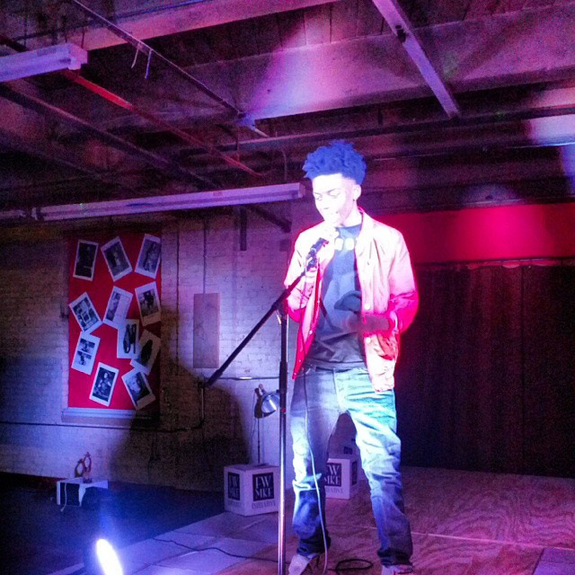
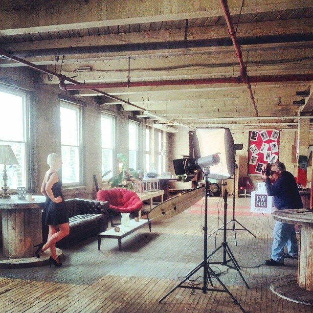

FM Style Studio
When fashion capitals come to mind, Milwaukee isn’t the first name to run off the tip of people’s tongues- if it’s mentioned at all. FM Style Studio is seeking to change that attitude by showcasing some of the city’s fashion minded folks and helping to create a creative community of fashion. There are a number of designers, stylists, entrepreneurs and sorts in Milwaukee in the fashion scene and Michael Damond, founder of FM Style Studio and Fashionable Mag is one of them.
Organizing fashion week initiatives, fashion nights out, and fashion shows, FM Style Studio is fresh with a new large warehouse space that doubles as a studio, triples as a collaborative space, and quadruples as a fashion haven. FM Style Studio is definitely moving fashion in Milwaukee in the right direction.amfm: How long has FM Style Studio been around?
FM Style Studio: It's been a year. It's hard for me to believe, because we've achieved so much over the last year.
amfm: Why did you want to start this initiative, I Am Fashion Forward? Why fashion? What does that mean to you and those involved?
FM: I love the arts, all facets of it. I find that fashion satisfies my creative appetite. So much expression is poured into the looks. Rather it's the clothes, the hair and makeup or the set design, there is always something to stimulate your senses. Let me not forget about the music. Fashion brings all of the art worlds together. I love that! The "I AM FASHION MOVING FORWARD" campaign was designed to bring attention to the fact that what we do now, as a fashion community, plays a critical role in shaping the future of Milwaukee's fashion economy. So many people are taking the initiative to get involved. The campaign is inviting. It unites and it empowers. We need that unity to begin creating the financial foundation that our artists, and Milwaukee needs.
amfm: It seems like FM Style Studio is composed of many things, a studio space, an events space, creative collaboration space, a movement - can you describe what FM Style Studios is and what do you envision it to be or evolve to?FM: Simply put, it's all of that. You can co-work, co-create or sit solo-dolo and enjoy the vibe we've created. It's a versatile space by design.
amfm: You’re working with a completely new warehouse space, that is essentially being transformed before your eyes. What is it like to completely bring an idea to fruition? How does it feel to build something from the ground up?FM: We were fortunate to find this space, it does maintain its 100 year old character quite well. The building managers at The Factory and the other tenants, like our friends at 6 Wings Studio, have been super cool and welcoming. We couldn't have asked for better neighbors.This space is truly a dream come true. We've always envisioned having a space like this, but thought it would come a few years later. The Universe made it possible now, so who are we to disagree.
amfm: What sparked the idea and how many people are involved?FM: The idea stemmed from the initiative to unite Milwaukee's fashion community and create a place for creatives to collide. In order for that to happen, it was important that we created a home for the community. The numbers are constantly increasing and we're attracting more than just "fashion people," which is cool too.
amfm: Have you always had an interest in fashion? How and why did you get into it, and how does fashionable mag play a role in that? How long has that been around?FM: Yes, I have. I have a graphic design background, so I'm very visual. Fashion is a natural fit for me. My business partners, Essential Barbie and Amy Watkins, have backgrounds in beauty and modeling, so it only made sense that we found common ground in fashion. Before we had the studio, we worked together on FashionableMags.com. The studio arose from the need to have a space to produce our collaborative work. The magazine was first launched in 2007 as Fashionable Milwaukee. I brought it back as FashionableMags.com in 2011 and joined forces with Essential and Amy in 2012.
amfm: How would you describe the fashion scene in Milwaukee? Do you believe Milwaukee to be fashion forward?FM: Milwaukee is often criticized and compared to cities that aren't Milwaukee. It's funny to me. Of course places like New York and Chicago are considered to be more "fashion forward." Especially when you're metric is based on how many luxury retailers are in the city. Expensive clothes and big brand names don't define "fashion forward," unless you allow it to. The cities I mentioned have been housing major fashion brands for decades. While Milwaukee has its share of large corporations, they're in a whole different ecosystem. Milwaukee has its pioneers. Many people have paved the way for us to do what we're doing. Now it's our turn to pave the way for the next generation of fashion forward creatives.
amfm: Why is entrepreneurship so important and how can it benefit and further enrich the city and its people?FM: Entrepreneurship is freedom. It’s definitely a lot of work, but it's worth it. Imagine how much happier people would be if they invested 40 hours per week into a passion that supports their needs. Entrepreneurship has served me well. I get to enjoy my family, my hobbies and my work. Why struggle and wait for someone to create a job for you? You're investing in yourself. Why would you NOT do that?
amfm: How are you helping cultivate careers in the fashion industry? In reference to a recent Milwaukee Magazine critique of Milwaukee Fashion Week and the fashion scene here in relation to boutiques and t-shirt lines getting more buzz than local designers, do you think Milwaukee a place where a designer can grow, create and be inspired?FM: We're helping by believing in people's dreams and potential. By sharing our space with those who need it. We're helping by being the example of what is possible through collaboration and hard work. We aren't critiquing from the sidelines without creating solutions. New York did not become the fashion capitol of the world overnight. It took a group of people, who were tired of being denied, to take initiative. It's about initiative. Period.
|  |  |
For more from FM Style Studio:
photo credit: lex allen photography, fm style studio